稀罕了老久的玛格丽特小饼，终于有时间做了，对于烘焙新手而言，这款饼干绝对是增加自信心的首选。零失败，入口即化的美味，和牛奶一起当宵夜是个不错的选择。
附谷歌search来的故事：玛格丽特饼干的全称为“住在意大利史特蕾莎的玛格丽特小姐”，英文名为 Italian Hard-boiled Egg Yolk Cookies. 很久以前，有一个糕点师在做饼干时，心中默默的念着他心中情人的名字，并将自己的手印按在饼干上。这就是“住在意大利史特雷莎的玛格丽特小姐”小饼的由来。
用料
- 低筋面粉 100克
- 玉米淀粉 100克
- 黄油 100克
- 熟蛋黄 2个
- 盐 1克
- 糖粉 40克
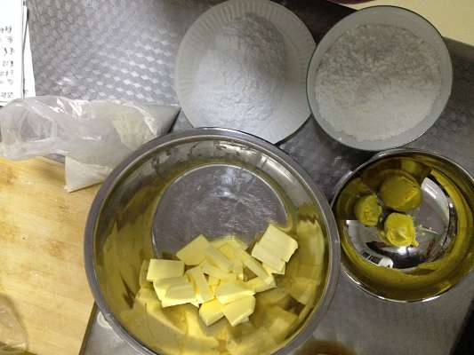
做法
1. 软化黄油
黄油软化到用筷子可以和泥的感觉，加入糖粉和盐，用打蛋器打发（隔水法总是掌握不好温度，直接拿吹风机吹的，一边吹一边用筷子搅动，分分钟就软了）。
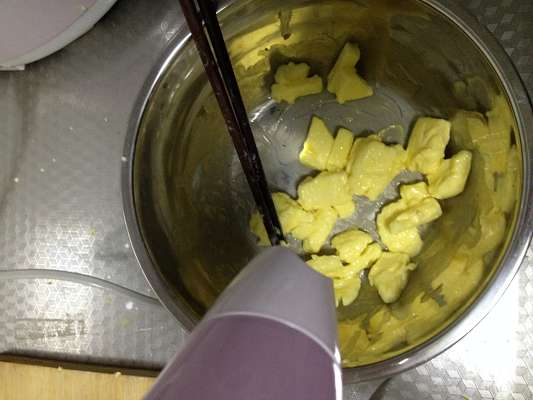
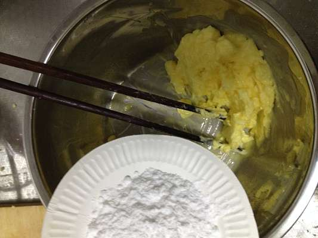
2. 黄油打发
黄油打到体积稍微膨大，颜色稍变浅即可（手动打蛋器快速搅动两分钟左右即可，无需太过打发）。
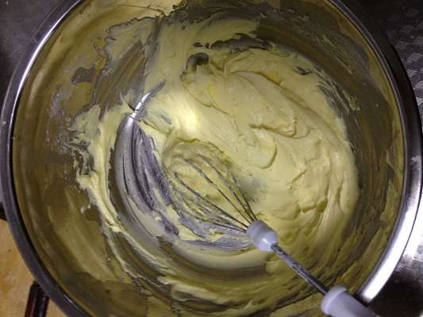
3. 筛入蛋黄
取蛋黄放在晒网上，用手指按压即可（密集恐惧症者千万不要去看晒网底部，绝对的自虐），筛入蛋黄细末后拌匀。
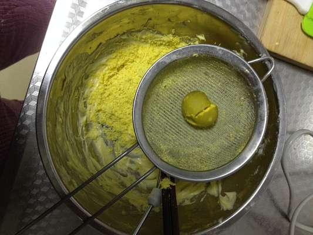
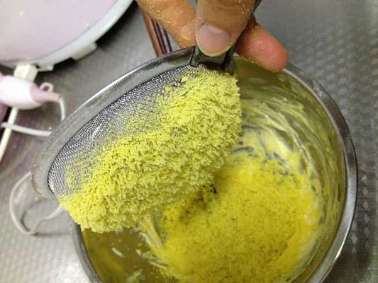
4. 筛入面粉、淀粉
低筋面粉和玉米淀粉过筛，筛进拌匀后的蛋黄糊中。
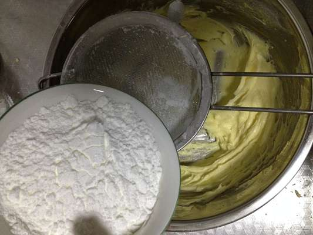
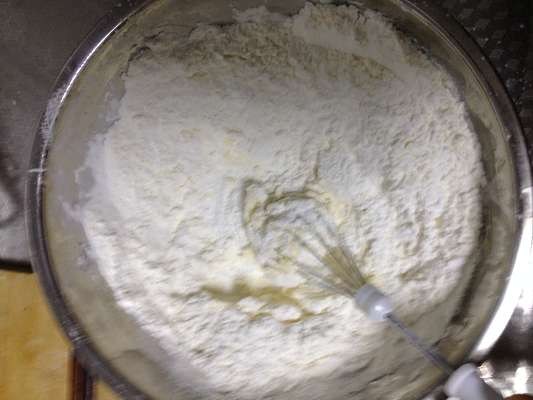
5. 揉成面团
将筛入面粉和淀粉的蛋黄糊揉成面团，揉好的面团的状态应该是略微偏干，但不会因为干燥而散开的状态，将面团用保鲜膜包好，放入冰箱冷藏一小时左右（冷藏后的面团更为干硬，用拇指按压塑形时更容易绽放出漂亮的裂纹）。
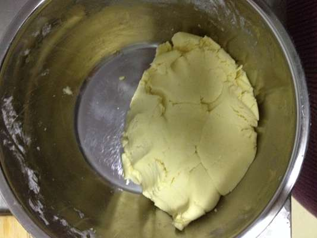
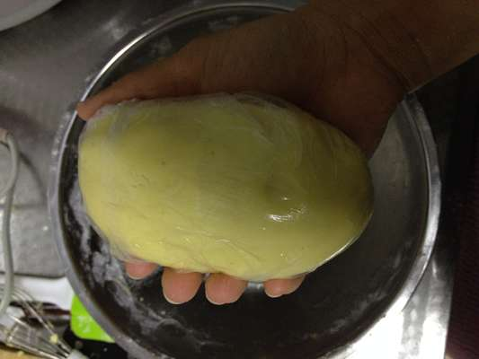
6. 烤盘塑形
取出冷藏后的面团，酌量取小块逐一揉成小圆球，放在烤盘上用拇指按压，按压至圆球变成饼状，边缘开裂即可，力度需要自己把握。
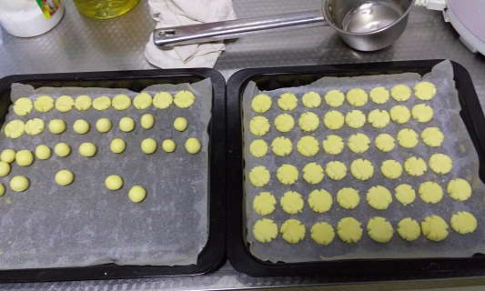
7. 烤制阶段
烤箱预热，将烤盘送入中上层、170度、15-20分钟（饼干表层开始起色其实就已经烤好了，可以果断取出来了）。
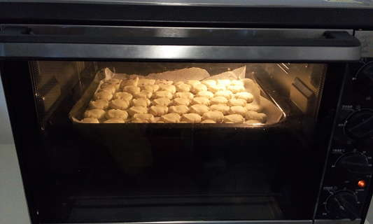
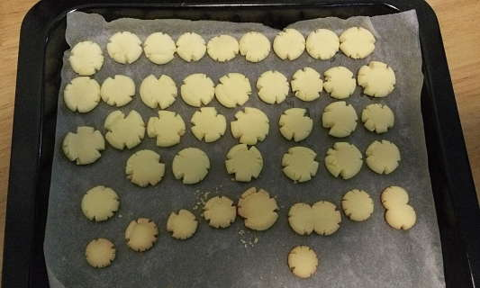